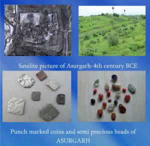

Activities of early man in the districts of Kalahandi are observed in the form of stone tools used by him for hunting and food gathering.
These are found scattered in the river terraces, rock shelters and natural caves in different parts of the district.
The rock shelters in the Gudahandi hills and the mountainous Maraguda valley on the Jonk river have yielded Palaeolithic tools of the Madras hand-axe complex.
At Chhilpa on the Tel chopper biface flake industry hand been discovered indicating and early phase of lithic culture in the district.
The flake industry consists of scrapers, points, nodules, cores and miniature hand-axe.The vallies of the Tel and her tributaries are mainly short blade although geometric objects like triangles and trapezes are sometimes met with.
The possible stone celts of the Neolithic culture are also found in short blade site and at Chhilpa the polished stone artifacts include interesting tools like burins and borers. Half a dozen of shouldered shelts of the late Neolithic period discovered in the Maraguda valley are preserved in the museum of Sambalpur University.

(ABOUT DISTRICT)
Present Kalahandi District covering a geographical area of 7920 sq km lies in between 19.175489ଂ to 20.454517ଂ
North Latitude and 82.617767ଂ to 83.794874ଂ East Longitude. The District occupies the South Western portion of
Odisha, bordered to the North by the Balangir District and Nuapada District, to the South by the Nabarangpur District,
Koraput District and Rayagada District, and to the East by the Rayagada, Kandhamal District and Boudh District.The
climate of the Kalahandi District is of extreme type. It is dry except during monsoon. The maximum temperature of the
District is 45+ degree Celsius, whereas the minimum temperature recorded is 4 degree Celsius. The District experiences
the average annual rainfall as 1378.20 mm. The monsoon starts late in June and generally lasts up to September.
No record is available to show how the name KALAHANDI originated. It was previously known by the name Karond. According
to Lieutenant Elliot, Deputy Commissioner, Raipur(1856), “This dependency is known only on the Nagpur side as Kharonde
(Karond ), the Oriya name being Kalahandi,and as there is no place or village corresponding the former name it would
appear to be a corruption of the latter, though it has been originally entered in the accounts.” In Koraput and Bastar
border area one comes across such names, with identical phonetic variations, which collaborated the above presumption.
The Village Bakawond in Bastar is called by the Oriyas as Bakahandi, Bajawand as Bajahandi, Nalpawond as Nalphandi and
Kumarwond and Kumarhandi. Similarly the village near Kotpad Sasahandi and Papadahandi are respectively called by the Baster people as Sasawond and Papadawond.
But since 1905 when this territory formed a part of the Bengal Presidency the name KALAHANDI is commonly
used.